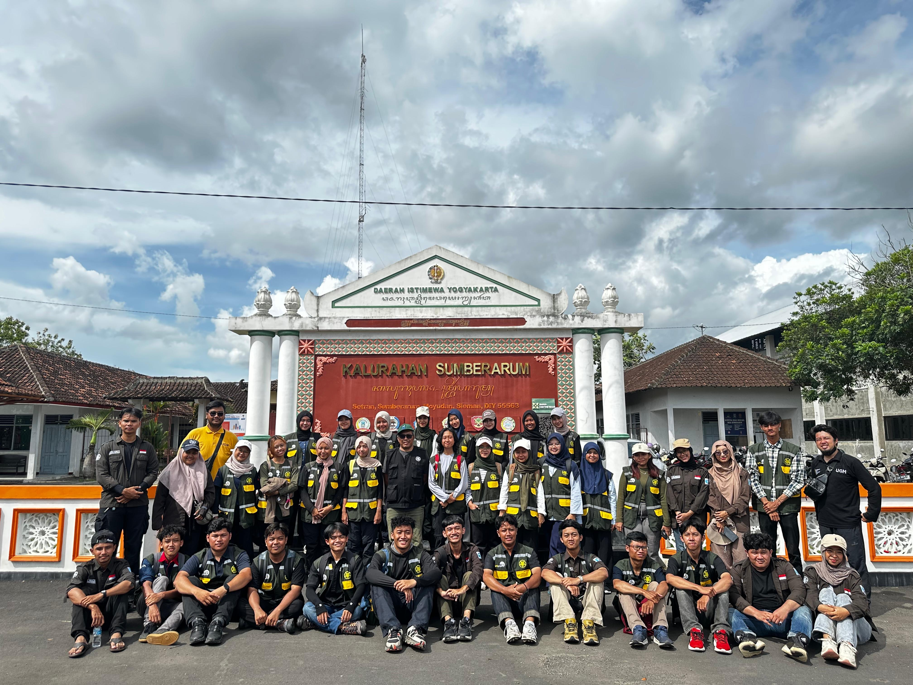
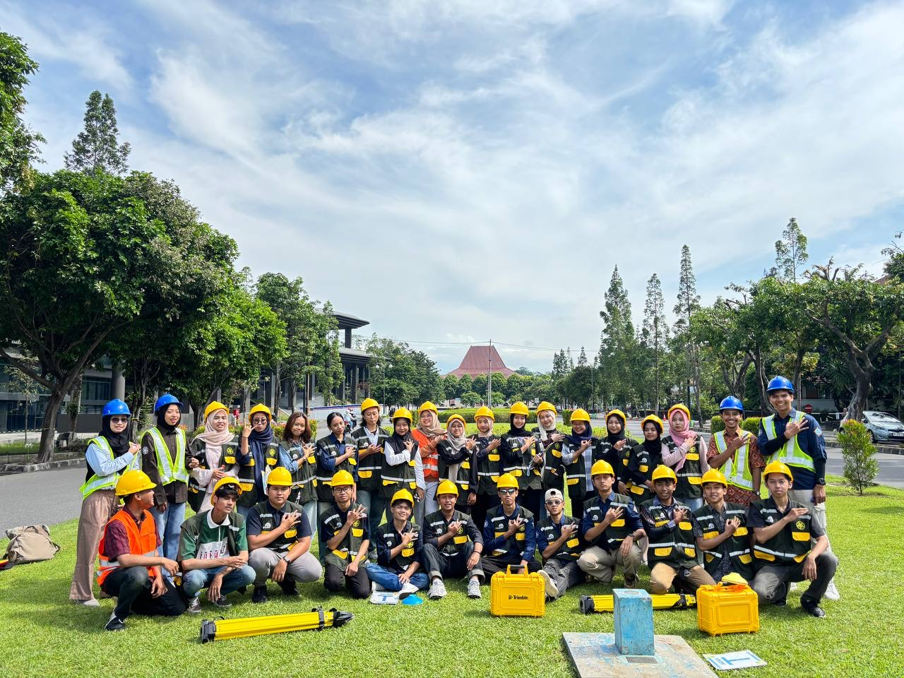
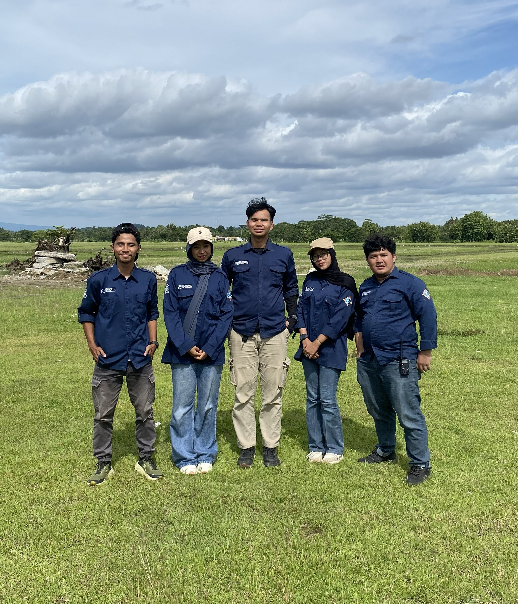

Asisten Praktikum, GNSS dan PGPB
Membantu dosen dalam pelaksanaan praktikum, termasuk penjelasan materi, pendampingan mahasiswa di kelas/lapangan, pengecekan data dan hasil praktikum, serta memastikan kegiatan berjalan tertib dan sesuai prosedur.


